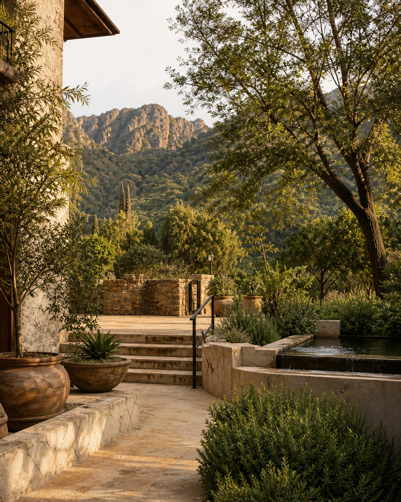
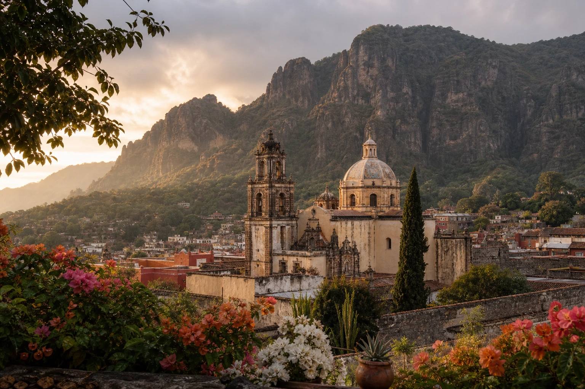
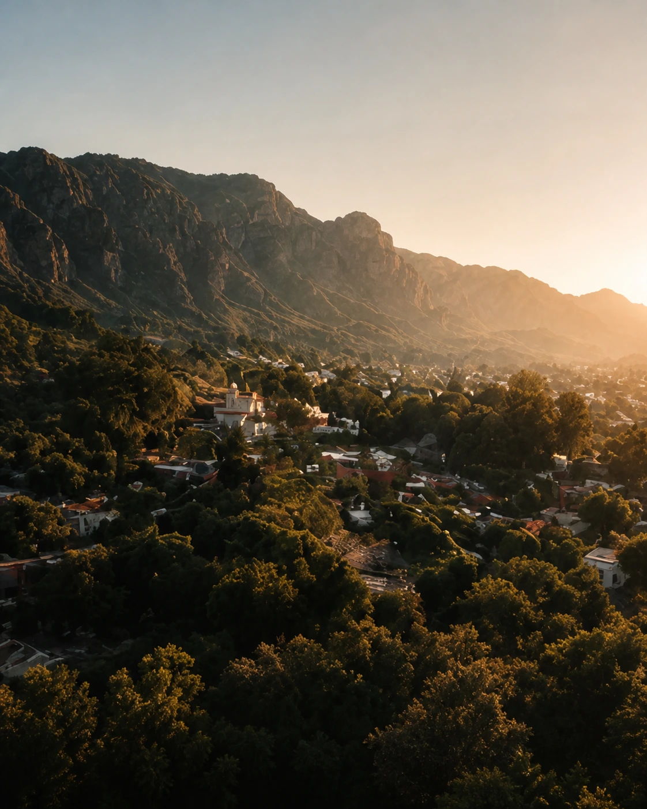
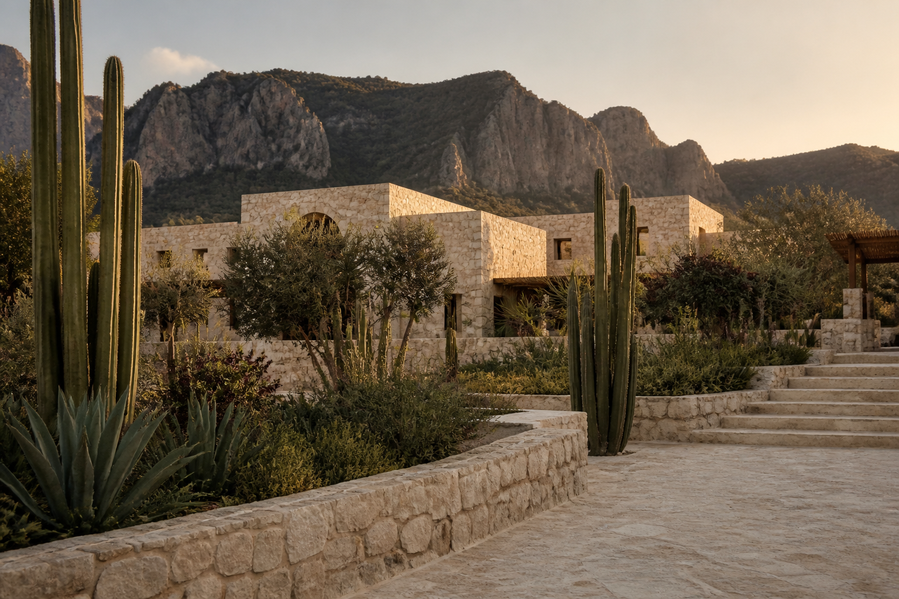

Venue
Welcome
We are delighted to welcome you
to our wedding website. Here, you will
find all the essential details for our special day.
Our wedding day
Save the Date
Tuesday, November 3, 2026
Hotel Piedra VivaTepoztlán, Morelos, México
Our ceremony begins at 2:45 PM at La Cascada. Please arrive at 2:00 PM. After we say “I do,” we’ll celebrate with drinks and canapés at cocktail hour before moving inside for dinner, speeches, and dancing the night away.
The Details

Dress code
Formal attire
Formal attire encouraged, fall colours welcomed. Feel free to wear whatever makes you feel comfortable.
The Celebration

Guest arrival
Hotel Piedra Viva
Ceremony
La Cascada
Cocktail hour
Drinks, music and welcome bites
Reception
Inside the main hall
Dinner
Followed by speeches
Party
Dancing begins
Antojitos Mexicanos
Late-night bites
Event concludes
Until next time
TravelA week in México
For those travelling afar
A week
in Mexico.
Arrive early, stay a little longer, and make the celebration part of a beautiful week away.
Arrive in Mexico City
Land in the capital, settle in and begin your Mexico City adventure.
Día de Muertos parade
Experience the city in its most luminous season—marigolds, music and remembrance.
Travel to Tepoztlán
Head south into the mountains; the journey from Mexico City is roughly ninety minutes.
Wedding day
Gather with us at Hotel Piedra Viva for an afternoon and evening under the Tepozteco.
See the dayPool day or hike
Keep the day unhurried—cool off by the pool or take in the panoramic mountain trail.
Return to Mexico City
Travel back to the city with a little time left for one last coffee or market visit.
Things to do
in the City.
We’ve chosen our wedding dates to fall just after Día de los Muertos (November 1st), one of Mexico’s most meaningful and beautiful celebrations. If you are able, we would love for you to celebrate this day with us in Mexico City.
Please click on the map below to explore some of our favourite places in the City.

Airport
Benito Juárez International (MEX). Roma, Condesa and Reforma are about 30–45 minutes away by taxi or Uber; allow longer at rush hour.
- Roma NorteLeafy streets, cafés and galleries. Lively and central; a little noisy on weekends.
- CondesaArt-deco blocks around two parks, great restaurants. Calmer evenings, slightly further from the centre.
- ReformaGrand avenue by Chapultepec park with the big hotels. Polished and easy, but more corporate after dark.
- Centro HistóricoThe Zócalo, Bellas Artes and the museums on your doorstep. Atmospheric by day; quieter and older hotels at night.
For accommodation, we recommend staying in Roma Norte, Condesa, Reforma, or Centro Histórico, all well-located and easy to explore. Don't hesitate to contact us for more tips.
Things to do
in Tepoztlán.
A mountain town of stone, colour and history—held beneath the dramatic Tepozteco ridge and filled with markets, gardens and centuries-old architecture.
Wander through the market, visit the Ex-Convento de la Natividad, or hike toward El Tepozteco for sweeping views. Leave some time simply to enjoy the town’s cafés, food and slower rhythm.
Use the map to begin exploring the town and the places surrounding our venue.



Hotel Piedra Viva is a 1.5-hour drive from Mexico City. We recommend staying at the hotel; rooms are limited, so close family will be given priority.
$2,250 MXN per night for two (about $180 CAD); a 3rd or 4th guest in a double suite is $850 MXN each. Tepoztlán also has lovely boutique hotels nearby.
Browse hotelsMexico City to Tepoztlán
About 1.5 hours by private transfer, taxi, rideshare or rental car.
Tepoztlán to venue
The town and nearby hotels are close by; taxis and rideshares are the easiest way over.
Parking
Complimentary at Hotel Piedra Viva.
24–27°Days
10–13°Nights
Dry and comfortable, with warm afternoons and cool evenings. Bring a light layer for after sunset.
A special request
For those who
remain in spirit.
We kindly invite you to bring a small framed photo of a loved one who is no longer with us. In keeping with tradition, we will be preparing an ofrenda to honour and remember those who remain in our hearts.
Gifts
Your presence
is our gift.
Your presence is the greatest gift we could receive.
If you would like to give something, a contribution toward our future would be deeply appreciated. Canadian guests may send an e-transfer to valeriaandseanharrigan@gmail.com. We kindly ask for electronic transfers only, rather than cash. Thank you.
Contact usGood to know
Frequently asked
questions.
Please refer to the names listed on your invitation. Reach out to Sean or Valeria if anything is unclear.
Please follow the names on your invitation, or contact us directly with any questions.
We recommend arriving in Mexico City by October 31 and travelling to Tepoztlán on November 2. Guest arrival at the venue begins at 2:00 PM on November 3.
The ceremony begins outdoors. Dinner and dancing follow inside; bring a light layer for the cool evening.
Taxis and rideshare services are the simplest options between local accommodation and Hotel Piedra Viva. Complimentary parking is available at the venue.
No need! We’ll have an open bar throughout the celebration. Please note that the hotel does not allow outside alcohol. Just bring your best energy and get ready to celebrate!
Email valeriaandseanharrigan@gmail.com
Valeria: 604-440-6820 · Sean: 604-307-7361
Your journey
Check-In
Share your travel dates and menu preferences so we can prepare a thoughtful welcome for everyone joining us in Tepoztlán.

Gracias
We cannot wait
to celebrate together.
Until we say I do
The Countdown
—Days
—Hours
—Minutes
—Seconds